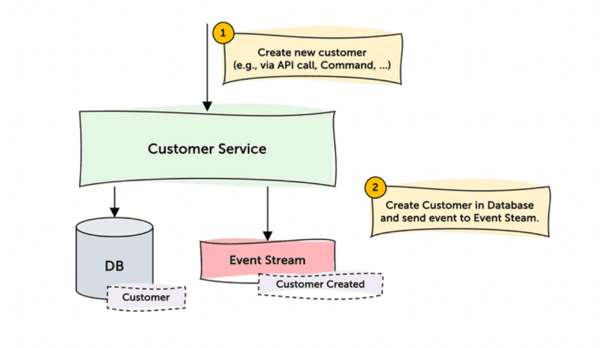
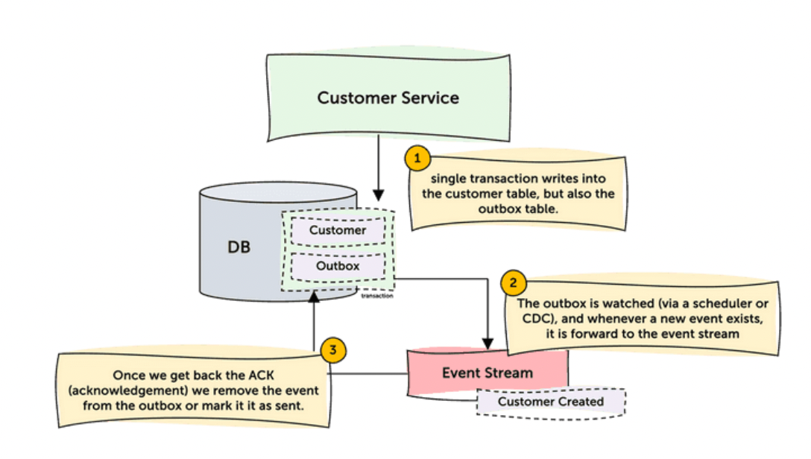

I was the third engineer at Ethos, so I had seen the system grow from a monolith into team-owned microservices as the engineering org scaled past roughly 50 people. But service-to-service communication was still ad hoc: direct calls, custom payloads, and team-specific retry logic made the system feel less like independent services and more like a distributed monolith.
I wrote the design proposal, compared options, presented to engineering leads, got CTO approval, and built the shared mechanics teams would depend on. The decision criteria were build cost, maintenance cost, technology cost, scale, reversibility, ownership, and whether product teams would actually use it.
Turned prior incidents and operational pain into explicit requirements.
Shared mechanics lived in one place, instead of being reimplemented by each service.
Defined the ownership split: product teams kept their business logic, while the platform owned the delivery substrate.
A DB write and an emitted event cannot disagree after a crash.
One domain event should feed many consumers without the producer knowing each one.
Teams need event IDs, offsets, partitions, dashboards, and a way to answer where delivery stopped.
Network partitions and crashes cannot create a committed entity with no event.
Without a schema contract, the bus just moves breaking changes faster.
The middle can be complex. The producer and consumer APIs cannot be.
We needed event production to be easy to adopt, high-throughput, ordered where needed, and strongly consistent. Since every service already used Postgres, and every engineer understood database transactions, we decided services would produce events through Postgres.
Postgres gave producers a transaction boundary they already understood.
Product code records the event. CDC handles broker publishing asynchronously.
Ordering keys let the platform preserve sequence where business workflows needed it.
The naive approach was: write the business row, then publish an event. If the service crashed between those steps, the database was correct locally, but downstream services never learned that anything changed.

The fix was to write the business row and the outbox row in the same Postgres transaction. If the transaction committed, both existed. If it rolled back, neither existed. A CDC monitor could then publish durable outbox rows to the event stream.
delivered_at tracks completion.partition_key preserves order for related events.
The producer-facing API created a normal Postgres row. The platform-owned monitor tailed committed rows, validated payloads, published them, and marked completion without product services taking a direct broker dependency.
CREATE TABLE outbox_events (
id UUID NOT NULL DEFAULT gen_random_uuid() PRIMARY KEY,
name text NOT NULL,
created_at timestamp with time zone DEFAULT CURRENT_TIMESTAMP NOT NULL,
partition_key text,
payload jsonb NOT NULL,
source text NOT NULL,
failure_strategy text CHECK (failure_strategy IN ('retry', 'drop', 'dlq')),
delivered_at timestamp with time zone
);
We needed producers and consumers to agree on event shape, versioning, and compatibility before messages reached production. Each producer owned the schema for the events it emitted.
Before schemas, the contract lived in code, docs, Slack threads, and assumptions between teams. With Avro and Schema Registry, the event shape became a versioned artifact. Producers owned the schema, consumers could validate compatibility, and the platform had a place to enforce the contract.
Kafka fit the scaling requirements: fanout, partitions, replay, offsets, and better debugging. But making every product team write Kafka consumers would have moved complexity to the worst place.
Familiar, but not the best long-term fit for ordering, replay, and broker-level debugging.
Most teams chose this path: less flexible than direct Kafka, but easier to operate correctly.
Good for specialized teams. Too much offset, retry, and client responsibility as a default.
input:
kafka:
addresses: [ ... ]
topics: [ policy_events ]
consumer_group: policy_service
pipeline:
processors:
- for_each:
- mapping: |
root.event_id = this.id
root.name = this.name
root.payload = this.payload
output:
http_client:
url: http://localhost:8080/events
verb: POST
Creating a policy meant the producer service owned the full orchestration: call downstream services, wait for responses, and save local state. Every new consumer or dependency made that producer more coupled.
Before the bus, Service A had to know which services cared about a policy change, how to call them, and what to do when one dependency failed. The event bus changed that ownership model: Service A emitted a durable business fact, and each consumer owned its reaction.
Owns downstream calls, retries, and response contracts.
Owns the state change and emitted event.
Owns its handler, failure policy, and operational behavior.
The strongest lesson from the project: platform systems get adopted when they solve a felt pain and do not ask every team to learn the platform's hardest technology. Kafka partitions and offsets improved debugging. The dispatcher kept that power from becoming every team's daily job.
A stalled CDC consumer can hold a replication slot open and grow WAL until the database is at risk. That makes replication lag a product reliability issue, not just an infra metric.
The platform owned the outbox monitor and CDC pipeline. Product teams owned their event handlers. Monitoring had to reflect that split, so alerts went to the team that could actually fix the failure.
Replication slot health, WAL growth, and outbox monitor lag belonged to the platform.
Handler errors, retries, and DLQs belonged to the team consuming the event.
Event IDs, offsets, timestamps, and dashboards gave both sides the same incident context.
State and event commit together. CDC takes the complexity after commit.
Most teams consume over HTTP through a dispatcher. The platform owns broker complexity.
Events become shared APIs. Schema compatibility is part of the platform.